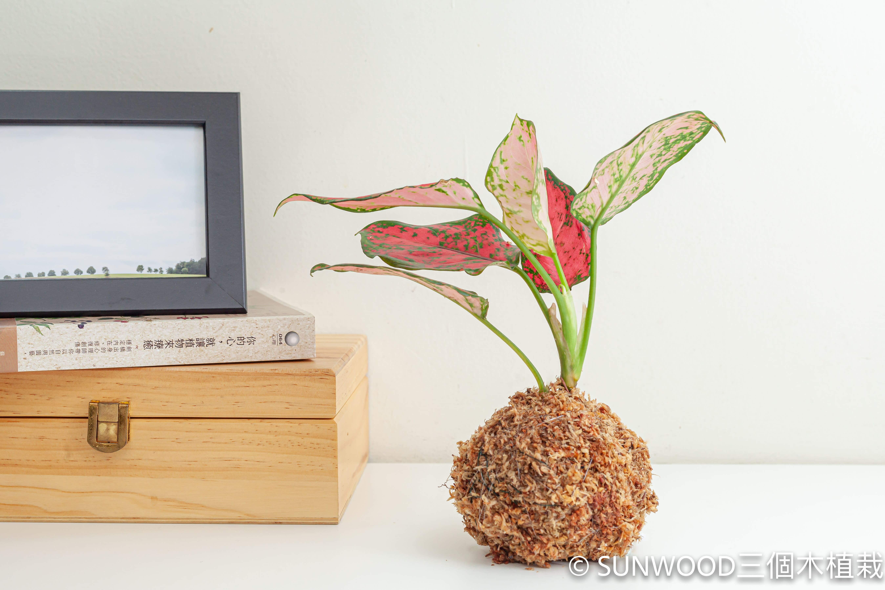
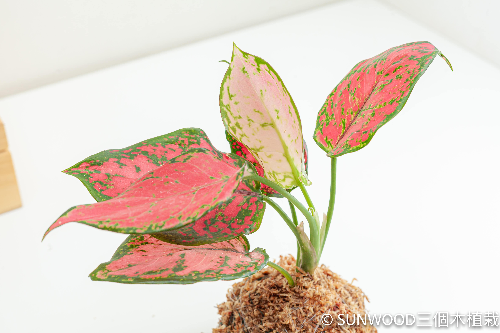
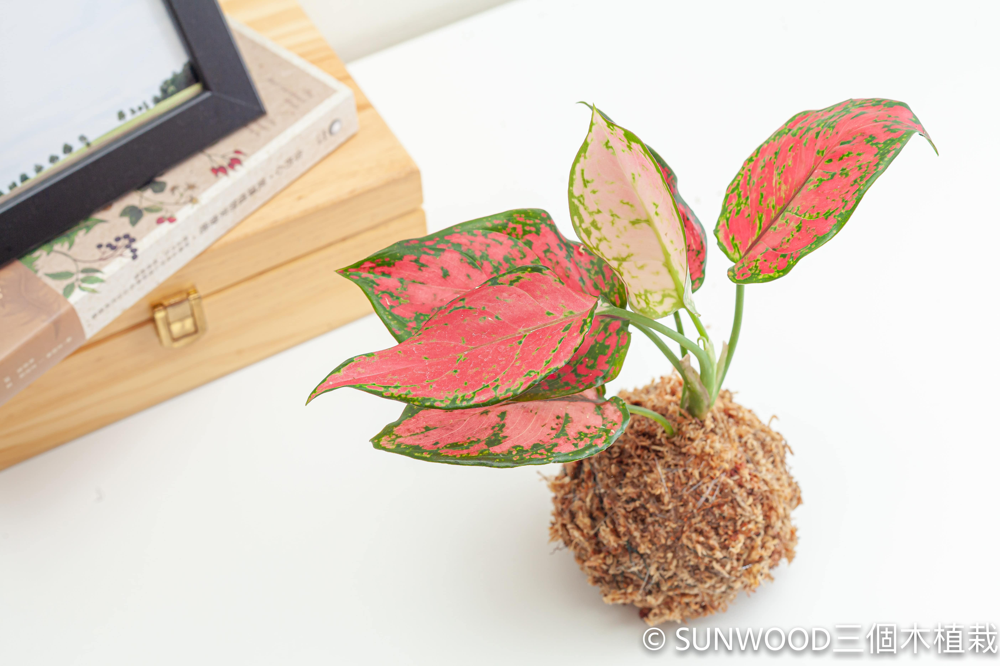

亞曼尼粗肋草
亞曼尼粗肋草苔球植栽 :
・商品內容 : 植株+苔球（直徑約5-10cm 高約15-20cm）（整組寄出）
・澆水方式：苔球麻繩顏色變淺,球體變輕後，將苔球放置在球體一半
水位的容器裡，泡水3-5分鐘即可
喜好環境 : 半日照、喜溫暖
・擺設：療癒的苔球可當居家擺飾放在房間、辦公室、客廳、書房、
玄關等，室內空間不昏暗，邀請綠色植物進入生活、放鬆療癒。
（避免太陽會直接照射到的位置）
＊若放置於窗台邊, 建議每週約轉動盆栽1/4圈, 使植栽接受均勻的間接日
照。
加入購物車